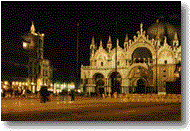
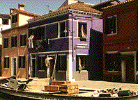
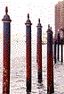

Venice
Venice is our favorite city. It's a great place to get lost in a spring rain, or to sit at a sunny outdoor table in the Campo Santa Margherita with a coffee.
We've visited Venice about a dozen times and can't wait to return.
We've been there in the fall and in the spring, but not in the high summer, when some folks say it's hot and smelly and crowded. We enjoy the excitement of the Bienale and the Film Festival, and the quiet of late fall.
On several trips, we stayed on the Lido at a lovely and friendly hotel,
the  Hotel Villa Stella, which we found on the internet.
The Lido in the off-season is quiet, but just ten minutes' vaporetto ride from the city.
Hotel Villa Stella, which we found on the internet.
The Lido in the off-season is quiet, but just ten minutes' vaporetto ride from the city.
We have enjoyed all the Venice hotels we've stayed in.
Some others were the Pensione Seguso, I guess Pound stayed there once, on the Zattere;
twice at the  Hotel Bisanzio,
just off the Riva degli Schiavoni, fancier and more expensive, but just as friendly;
and the Ca' San Trovaso in the Dorsoduro, near the Campo Santa Margherita.
On several trips we have rented apartments, and had good experiences.
Hotel Bisanzio,
just off the Riva degli Schiavoni, fancier and more expensive, but just as friendly;
and the Ca' San Trovaso in the Dorsoduro, near the Campo Santa Margherita.
On several trips we have rented apartments, and had good experiences.
Food
We had some outstanding meals in Venice. The guidebooks say to try "seppie in neri," squid cooked in its own ink. Believe them, and try it. It's delicious, whether as a pasta, a risotto, or a main dish. The first time I had this was at the Ristorante Al Galeon, on the Via Garibaldi.

If you're a tourist, you have to learn Venice's schedule for eating, or you'll be frustrated. Breakfast is nothing much: you may get nothing but coffee and packaged bread products. Lunch starts around noon, and by two the restaurants are almost all closed. You can't get dinner till about seven. But then you can stretch that dinner for two or three hours, appetizers first, then pasta, then an entree, then dessert and coffee.
Walking

Before one trip, we went through the guidebooks and made a list of churches we wanted to visit. After a while we stopped looking at it though: some of the churches have two or three different names, depending on which map or guidebook you're using; others are chiuso per restauro; others are open only certain hours. We just wandered the city, and if we passed a church, and it was open, we visited. Every one was interesting and had its own special beauty.
When we visit Venice, we walk all over the city, visiting each of the six wards or sestieri. (Sixths. lots of Italian is not that hard to puzzle out, using imagined etymologies.) We barely visit St. Mark's Square and the busy shopping streets; a short distance from the crush of tourists, there are peaceful areas with few pedestrians. The best part of all was that there are no cars, no bicycles, and no scooters; it feels much safer, walking in Venice, knowing no vehicles are bearing down on our backs.
We find Venetians to be friendly and gracious hosts. Most speak excellent English and are tolerant of our poor Italian.
Burano

On one trip, we took the vaporetto to Burano, and explored this small island. The brightly colored houses are quite different from Venice's limited range, and the architecture was subtly different. It was still very Venetian, nice big church, outdoor cafes, life in the streets.

This page describes our personal experience.
Another good source is the always entertaining  Rick Steves on Venice
(I'd disagree with his page though:
we found Venice inexpensive, uncrowded, and easy to find a room in: depends on when you go, I guess).
Rick Steves on Venice
(I'd disagree with his page though:
we found Venice inexpensive, uncrowded, and easy to find a room in: depends on when you go, I guess).
Updated 09/07/2012